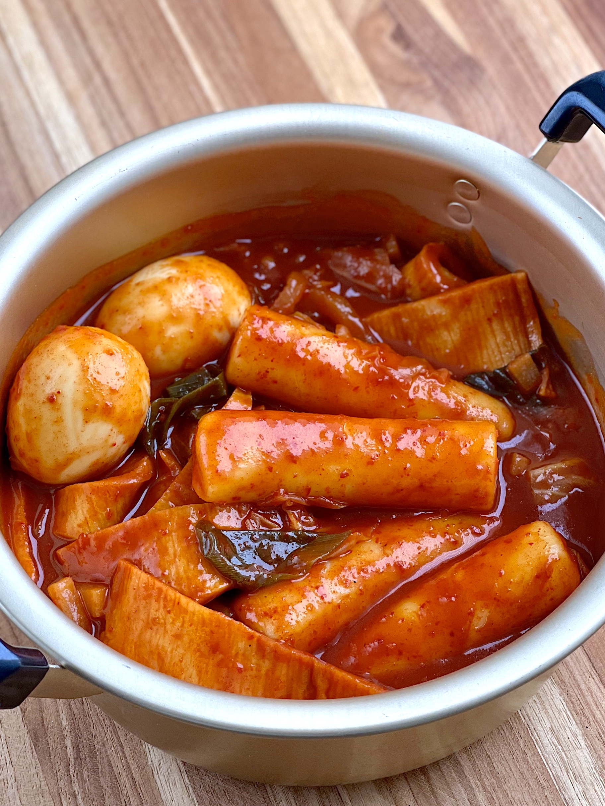

Tteokbokki Recipe

Description
As described by
My Korean Kitchen:
A popular and tasty Korean street food.
Please note: the recipe and ingredients are also taken from RecipeTinEats' article;
this content is not original
Ingredients
- Korean rice cakes
- Korean fish cakes
- Korean soup stock
- Onion
- Gochujang (Korean chilli paste)
- Raw sugar
- Minced garlic
- Gochugaru
- Roasted sesame seeds
- Sesame oil
- Stalk green onion, finely chopped
Steps
-
Soak the rice cakes in warm water for 10 minutes.
(If you are using fresh rice cakes that are already tender,
feel free to skip this step. However, if you are using
packaged rice cakes from the fridge, it is recommended
to soak them to enhance their moisture level before
proceeding with the recipe.)
-
Boil the soup stock in a shallow pot over medium high
heat and dissolve the tteokbokki sauce by stirring it
with a spatula. Once the seasoned stock is boiling,
add the rice cakes, fish cakes and onion. Boil them
a further 3 to 5 mins until the rice cakes are fully
cooked. Then, to thicken the sauce and to deepen
the flavor, simmer it over low heat for a further 2 to 4 mins.
-
Add the sesame oil, sesame seeds, and green onion then quickly
stir. Serve warm.